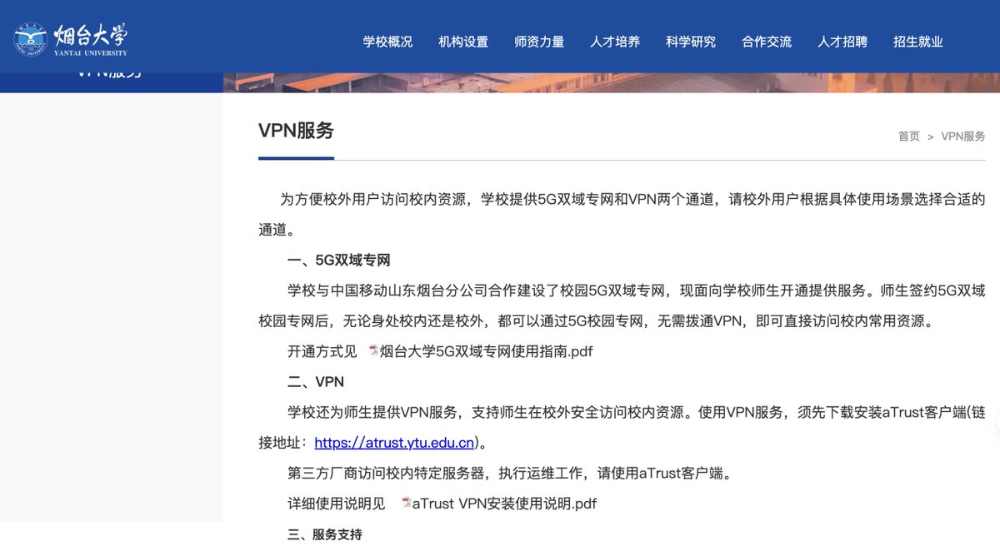

奶昔🥤
@realNyarime
aTrust（旧版叫EasyConnect）是深信服（Sangfor）开发的SSL VPN软件，对标的是思科的AnyConnect协议，开源的有OpenConnect
这并不是翻墙协议，而是正经的企业用途，如果你使用国区App Store搜索Cisco Secure Client是可以直接下载到这款VPN应用的，人家思科公司作为GFW早期的方案提供商有金身护体，反观深信服有深圳国资委背景护法
这类企业VPN是能拿来翻墙没错，跟WireGuard一样属于可识别却限速的情况，因为公家也要用这个协议。惹恼了外资出逃，那就直接倒车到底了，一看就是吃了没上过大学的亏🤣

狗富贵
@JFGAi
兄弟们！墙塌啦
山东烟大校官网直接挂 VPN 下载链接，连安装说明PDF都给你准备好了，属于合规摸鱼教科书级操作。
但实话实说——我还在质疑真实性。 https://t.co/lyOAw1cGLs